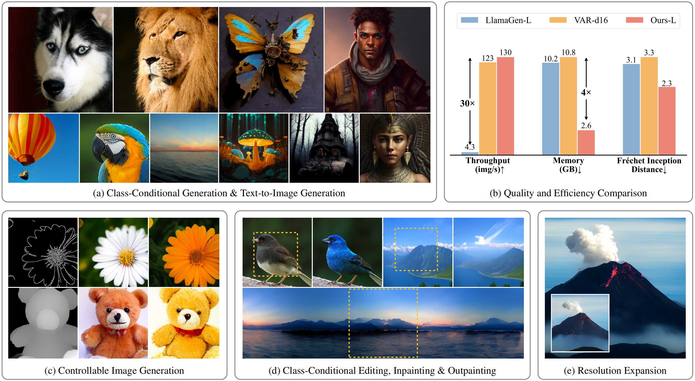

Decouple position from content
Next-token positions are encoded as queries, while visible image content stays in key-value representations.
ICLR 2026
One causal architecture for random-order modeling, parallel decoding, and zero-shot spatial control.

Conventional visual autoregressive models inherit a fixed raster order. ARPG removes that constraint while retaining a causal architecture and its efficient KV cache.
ARPG is a visual autoregressive model for randomized parallel generation. Its decoupled decoding framework separates positional guidance from content representation, encoding them as queries and key-value pairs. Injecting that guidance directly into causal attention enables fully random-order training and generation without bidirectional attention.
The same design supports multiple simultaneous queries over a shared KV cache, turning random-order generation into efficient parallel inference. It also generalizes without task-specific training to image inpainting, outpainting, and resolution expansion.
ARPG treats “where to predict” and “what to predict” as two different signals, then uses that separation to unlock random-order and parallel decoding.
Next-token positions are encoded as queries, while visible image content stays in key-value representations.
Explicit positional guidance lets a causal transformer learn arbitrary token orders without switching to bidirectional attention.
Multiple position queries share one KV cache, enabling parallel prediction with lower latency and memory overhead.
Randomized order is more than a speed optimization: it makes generation naturally compatible with arbitrary known and unknown image regions.
High-quality ImageNet synthesis through efficient parallel autoregressive decoding.
Preserve visible tokens and predict new content in selected regions.
Fill interior masks or extend beyond the original canvas without task-specific retraining.
Reuse the same random-order mechanism to add detail beyond the training resolution.
Pretrained checkpoints for ImageNet-1K at 256 × 256 are available on Hugging Face.
| Model | Parameters | Schedule | Steps | Checkpoint |
|---|---|---|---|---|
| ARPG-L | 320M | Cosine | 64 | Download ↗ |
| ARPG-XL | 719M | Cosine | 64 | Download ↗ |
| ARPG-XXL | 1.3B | Cosine | 64 | Download ↗ |
Load ARPG through the Hugging Face Diffusers pipeline and generate a batch of ImageNet classes in a few lines.
Full instructionsfrom diffusers import DiffusionPipeline
pipeline = DiffusionPipeline.from_pretrained(
"hp-l33/ARPG",
custom_pipeline="hp-l33/ARPG"
)
image = pipeline(
model_type="ARPG-XL",
seed=0,
num_steps=64,
class_labels=[207, 360, 388, 113],
cfg_scale=4,
sample_schedule="arccos"
)
image.show()If ARPG is useful in your research, please cite the ICLR 2026 paper.
@inproceedings{li2026autoregressive,
title = {Autoregressive Image Generation with Randomized Parallel Decoding},
author = {Haopeng Li and Jinyue Yang and Guoqi Li and Huan Wang},
booktitle = {The Fourteenth International Conference on Learning Representations},
year = {2026}
}